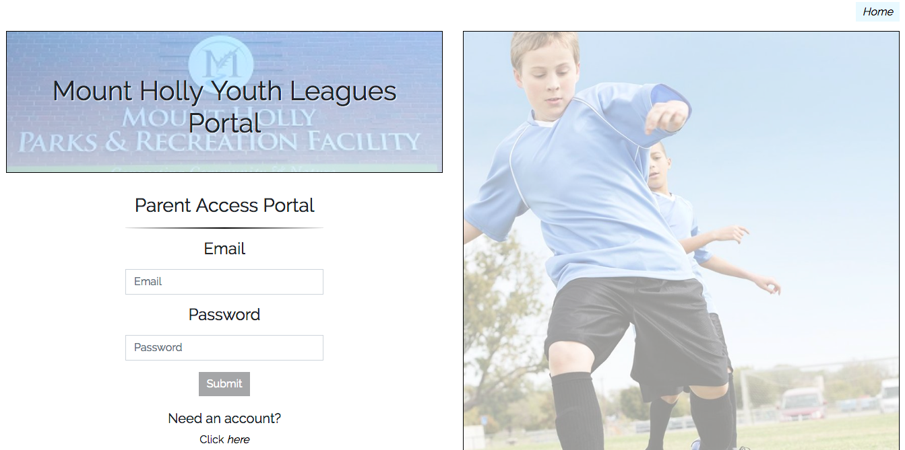
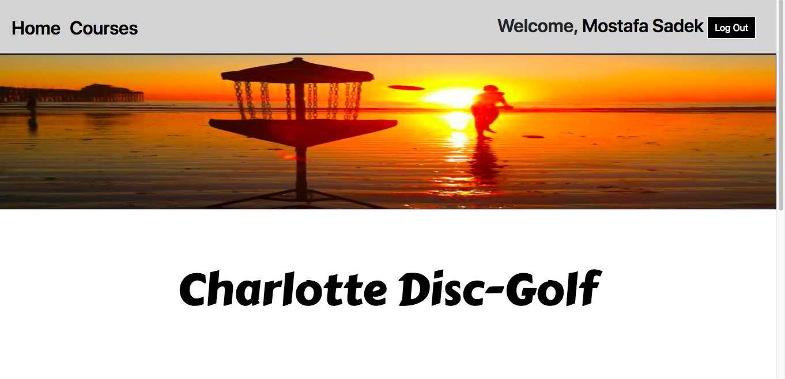
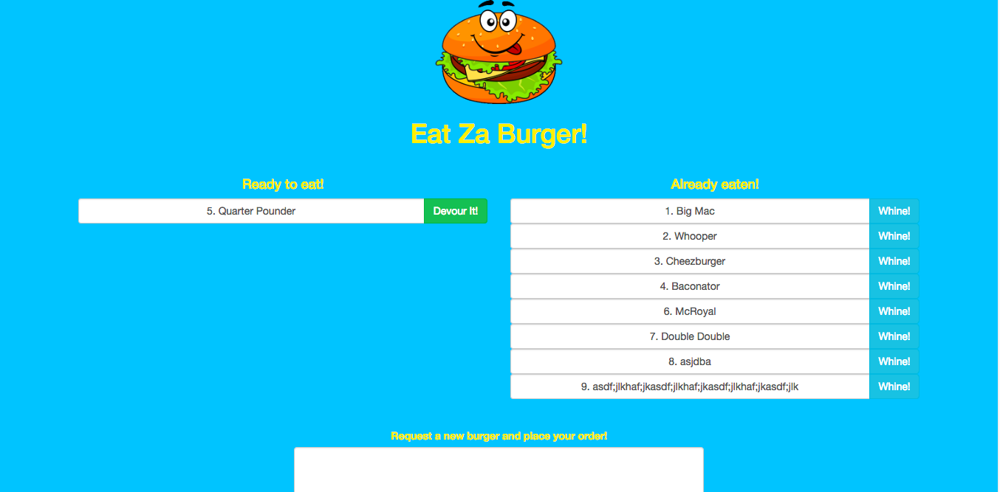
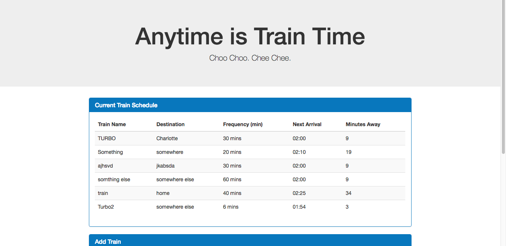
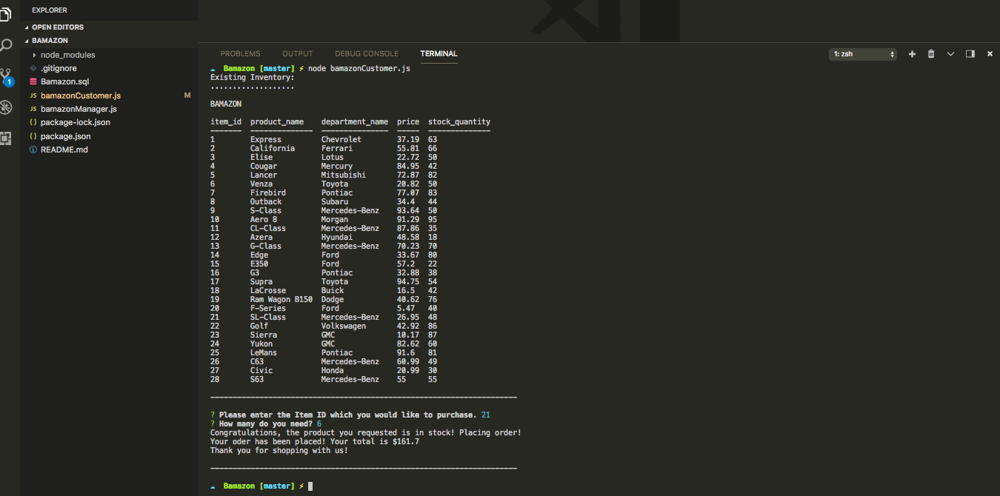

A web application designed for the town of Mount Holly, NC or any town that provides youth athletic leagues. This site will be used for parents to sign up their children and as an information resource for parents, coaches, and league managers.
A full stack application that allows user to track their scores at disc golf courses while being provided information about the courses and respective holes. Users will create an account through their Google account, then can look up courses, play a new round of disc golf, or browse through their round history.
Eat-Za-Burger! is a restaurant app that lets users input the names of burgers they'd like to eat and whenever a user submits a burger's name, your app will display the burger on the left side of the page -- waiting to be devoured.
This is a train schedule application that incorporates Firebase to host arrival and departure data. The app will retrieve and manipulate this information with Moment.js. This website will provide up-to-date information about various trains, namely their arrival times and how many minutes remain until they arrive at their station.
A Node.js & MySQL digital storefront. This is a command line Node app that mimics a beloved online retailer.
Apart from being a web developer, I enjoy most of my time being outdoors. In the winter, I am an avid skiier. During the warmer months here in CHARLOTTE, I enjoy mountain biking, hiking, and kayaking.
When forced indoors, I follow a number of sci-fi and fantasy genre movies and television shows, I am an aspiring chef, and I spend a large amount of my free time exploring the latest technolgy advancements in the front-end and back-end web development world and video games.